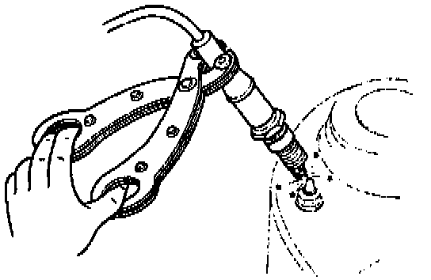

Component Tests and General Diagnostics
WARNING: High voltage in the ignition system can cause a strong electrical shock. Avoid direct contact to the vehicle body during the following spark test.1. Remove the spark plug.
2. Connect the spark plug to a high-tension lead.
View: Checking Spark:

3. Hold the high-tension lead with insulated pliers 5 - 10 mm (0.2 - 0.39 in) from a ground.
4. Crank the engine and verify that there is a strong blue spark. If not, replace the spark plug or high-tension lead as necessary.